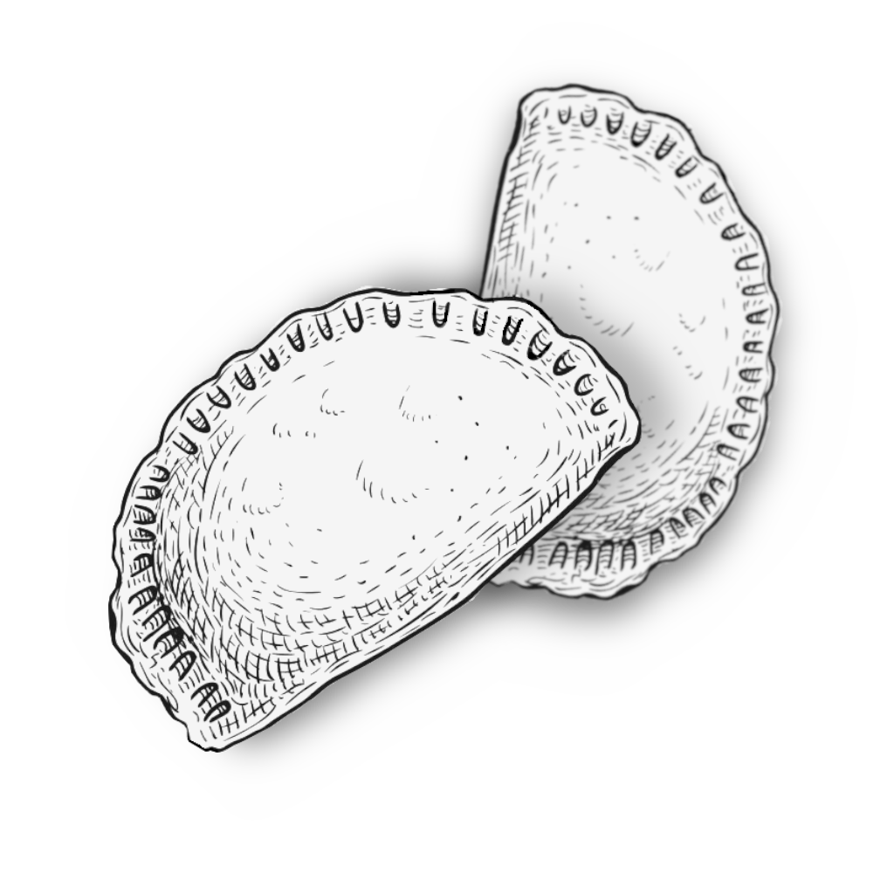

Empanadas Salteñas

These are truly traditional beef empanadas from Salta, one of the Northern Provinces in Argentina.
Made with
ground beef, potatoes, hard-boiled eggs, and a fluffy homemade empanada pastry, these are just to die for!
Ingredients
Pastry
- 6 tablespoons water
- 1/2 teaspoon salt
- 2 cups all-purpose flour, sifted
- 1/4 cup margarine, melted
- 1 teaspoon vegetable oil, or as needed
Filling
- 2 medium potatoes, peeled and cubed
- 1/4 cup salted butter
- 2 medium onions, chopped
- 2 stalks green onions, finely chopped
- 1.5 medium red bell peppers, seeded and chopped
- 2/3 pound ground beef
- 1 teaspoon salt
- 1/2 teaspoon cayenne pepper
- 1 teaspoon ground cumin
- 1 teaspoon paprika
- 3 large hard-boiled eggs, peeled and chopped
Directions
- Combine water and salt in a small saucepan over medium heat and warm through, stirring until salt is
dissolved.
Remove from heat and let cool for 2 to 3 minutes.
- Combine sifted flour and melted margarine in the bowl of a food processor; pulse until crumbly.
Add salt
water gradually to the food processor and pulse until a soft dough ball forms that easily separates from the
edge of the bowl.
Add more water, 1 teaspoon at a time, only if needed. Press dough into a ball and wrap
tightly with plastic wrap.
Refrigerate for at least 30 minutes.
- Preheat the oven to 425 degrees F (220 degrees C).
Cover a baking sheet with aluminum foil and grease
with vegetable oil. Set aside.
- Bring a saucepan of water to a boil.
Add cubed potatoes and cook until soft, 8 to 10 minutes.
- Meanwhile, melt butter in a skillet over medium heat.
Cook and stir onions and green onions until soft
and translucent, about 5 minutes.
Add red peppers and cook for 5 more minutes.
Add ground beef and
stir with a wooden spoon until fully browned, about 5 minutes.
Season with salt, cayenne pepper, cumin,
and paprika.
Remove from heat.
- Drain potatoes and add to the filling.
Toss in chopped eggs and let filling cool down for a few minutes.
- Remove pastry from the fridge and knead gently on a floured surface.
Divide dough in half and roll out
each piece to 1/8-inch thickness.
- Cut out 3-inch circles with a pastry cutter or sharp knife and wet the edges lightly with water.
Add 1
large tablespoon of filling in the center of each disc.
Fold the pastry over, press edges together, and
seal with a fork.
Transfer empanadas to the prepared baking sheet.
- Bake in the preheated oven until golden brown, 10 to 15 minutes.
Remove from the oven and allow to cool
just a little before serving.